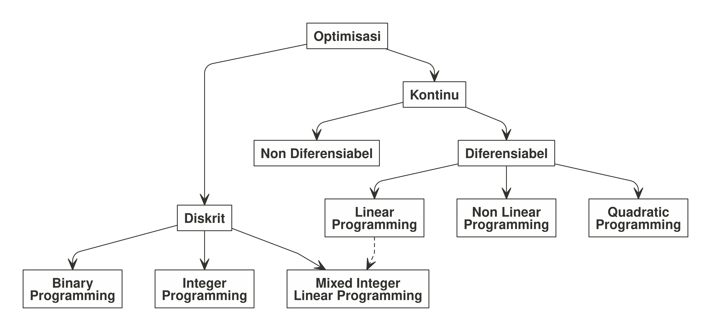
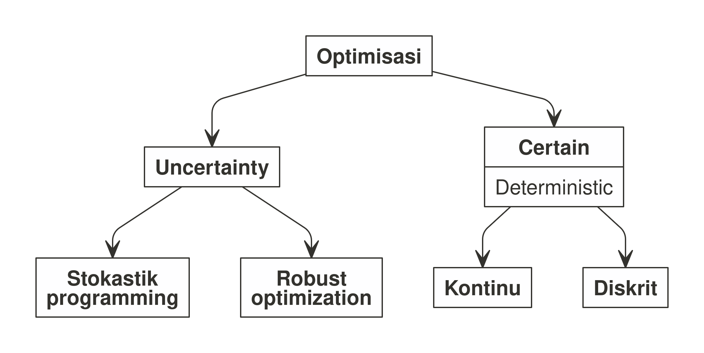

1 OPTIMISASI
1.1 Bahasan dalam Optimisasi
Bahasan dalam optimisasi dapat dikategorikan menjadi:
- Pemodelan masalah nyata menjadi masalah optimisasi.
- Pembahasan karakteristik dari masalah optimisasi dan keberadaan solusi dari masalah optimisasi tersebut.
- Pengembangan dan penggunaan algoritma serta analisis numerik untuk mencari solusi dari masalah tersebut.
1.2 Masalah Optimisasi
Masalah optimisasi adalah masalah matematika yang mewakili masalah nyata (real). Dari ekspresi matematika tersebut, ada beberapa hal yang perlu diketahui1, yakni:
- Variabel adalah suatu simbol yang memiliki banyak nilai dan nilainya ingin kita ketahui. Setiap nilai yang mungkin dari suatu variabel muncul akibat suatu kondisi tertentu di sistem.
- Parameter di suatu model matematika adalah suatu konstanta yang menggambarkan suatu karakteristik dari sistem yang sedang diteliti. Parameter bersifat fixed atau given.
- Constraints (atau kendala) adalah kondisi atau batasan yang harus dipenuhi. Kendala-kendala ini dapat dituliskan menjadi suatu persamaan atau pertaksamaan. Suatu masalah optimisasi dapat memiliki hanya satu kendala atau banyak kendala.
- Objective function adalah satu fungsi (pemetaan dari variabel-varibel keputusan ke suatu nilai di daerah feasible) yang nilainya akan kita minimumkan atau kita maksimumkan.
Ekspresi matematika dari model optimisasi adalah sebagai berikut:
Cari \(x\) yang meminimumkan \(f(x)\) dengan kendala \(g(x) = 0, h(x) \leq 0\) dan \(x \in D\).
Dari ekspresi tersebut, kita bisa membagi-bagi masalah optimisasi tergantung dari:
- Tipe variabel yang terlibat.
- Jenis fungsi yang ada (baik objective function ataupun constraints).
1.3 Jenis-Jenis Masalah Optimisasi
Masalah optimisasi bisa dibagi dua menjadi dua kategori berdasarkan tipe variables yang terlibat2, yakni:

- Discrete Optimization: merupakan masalah optimisasi di mana variabel yang terkait merupakan variabel diskrit, seperti binary atau integer (bilangan bulat). Namun pada masalah optimisasi berbentuk mixed integer linear programming, dimungkinkan suatu masalah optimisasi memiliki berbagai jeni variabel yang terlibat (integer dan kontinu sekaligus).
- Continuous Optimization: merupakan masalah optimisasi di mana variabel yang terkait merupakan variabel kontinu (bilangan real). Pada masalah optimisasi jenis ini, fungsi-fungsi yang terlibat bisa diferensiabel atau tidak. Konsekuensinya adalah pada metode penyelesaiannya.
Selain itu, kita juga bisa membagi masalah optimisasi berdasarkan kepastian nilai variable dan parameter yang dihadapi sebagai berikut:

- Optimization under uncertainty3; Pada beberapa kasus di dunia real, data dari masalah tidak dapat diketahui secara akurat karena berbagai alasan. Hal ini mungkin terjadi akibat:
- Kesalahan dalam pengukuran, atau
- Data melibatkan sesuatu di masa depan yang belum terjadi atau tidak pasti. Contoh: demand produk, harga barang, dan sebagainya.
- Deterministic optimization;
- Model deterministik adalah model matematika di mana nilai dari semua parameter dan variabel yang terkandung di dalam model merupakan satu nilai pasti4.
- Pendekatan deterministik memanfaatkan sifat analitik masalah untuk menghasilkan barisan titik yang konvergen ke solusi optimal.
- Semua algoritma perhitungan mengikuti pendekatan matematis yang ketat.
1.4 Optimisasi Berdasarkan Seberapa Banyak Objectives-nya
Suatu permasalahan optimisasi bisa dikategorikan menjadi dua jenis:
- Single objective optimization, adalah proses menemukan solusi terbaik untuk suatu masalah yang hanya memiliki satu tujuan atau kriteria yang ingin dimaksimalkan atau diminimalkan. Ini adalah bentuk optimisasi yang paling fundamental dan banyak digunakan dalam berbagai bidang seperti teknik, ekonomi, ilmu data, dan machine learning.
- Multi objective optimization, adalah proses mencari solusi optimal ketika terdapat beberapa tujuan (objectives) yang saling bertentangan (conflicting) yang harus dioptimalkan secara simultan. Tidak seperti single objective yang memiliki satu solusi optimal, MOO menghasilkan himpunan solusi optimal yang mewakili trade-off antara berbagai tujuan.
1.4.1 Representasi Matematis Single Objective
Secara formal, single objective optimization dapat dinyatakan sebagai:
Minimisasi: [ \(\min_{x \in S} f(x)\) ] atau Maksimisasi: [ \(\max_{x \in S} f(x)\) ].
Di mana:
- \(f(x)\) adalah fungsi objektif (objective function) yang ingin kita minimalkan atau maksimalkan.
- \(x\) adalah vektor variabel keputusan (decision variables).
- \(S\) adalah ruang pencarian atau himpunan solusi layak (feasible region) yang memenuhi semua kendala.
1.4.2 Representasi Matematis Multi Objective
Masalah MOO dapat dinyatakan sebagai:
\[\min_{x \in S} \mathbf{F}(x) = [f_1(x), f_2(x), ..., f_k(x)]^T\]
Di mana:
- \(\mathbf{F}(x)\) adalah vektor fungsi objektif (bukan skalar).
- \(f_i(x)\) adalah fungsi objektif ke-i (\(i = 1, 2, ..., k\)).
- \(x\) adalah vektor variabel keputusan.
- \(S\) adalah ruang solusi layak yang memenuhi semua kendala.
1.4.3 Menyelesaikan MOO
Ada beberapa cara menyelesaikan MOO:
Metode Scalarization (A Priori): Mengkonversi multi-objective menjadi single objective. Caranya:
- Weighted Sum Method: ( \(\min \sum w_i f_i(x)\) ) yakni dengan memberikan bobot untuk masing-masing objective functions sesuai dengan kebutuhan.
- ε-Constraint Method: Optimize satu objective function, dan menjadikan objective function yang lain menjadi constraint dengan batas suatu nilai ε.
Metode Evolutionary (A Posteriori): Menghasilkan seluruh Pareto front. Caranya:
- NSGA-II (Non-dominated Sorting Genetic Algorithm).
- MOEA/D (Multi-Objective Evolutionary Algorithm based on Decomposition).
- SPEA2 (Strength Pareto Evolutionary Algorithm).
1.5 Optimisasi Berdasarkan Bentuk Objectives Function-nya
Kita bisa membagi optimisasi berdasarkan bentuk objective function-nya, yakni:
- Linear optimization adalah metode matematis untuk menemukan nilai maksimum atau minimum dari suatu fungsi tujuan (objective function) linear, dengan mematuhi serangkaian batasan (constraints) yang juga linear.
- Non linear optimization adalah proses menemukan nilai maksimum atau minimum dari suatu fungsi tujuan (objective function) yang non-linear, dengan mematuhi serangkaian batasan (constraints) yang juga bisa non-linear.
Inti perbedaannya dengan Linear Optimization: Hubungan antara variabel-variabelnya tidak harus lurus. Fungsi tujuan atau batasannya dapat melibatkan kurva, polinomial, eksponensial, interaksi antar variabel, dan bentuk-bentuk kompleks lainnya.
1.6 Catatan
Hampir semua libraries solver yang umum tersedia hanya diperuntukkan untuk menyelesaikan masalah single objective dan linear saja. Oleh karena itu, jika memiliki keterbatasan untuk hanya isa bekerja dengan solver tersebut, maka kita perlu memodifikasi masalah kita agar menjadi bentuk yang kompatibel dengan solver tersebut.